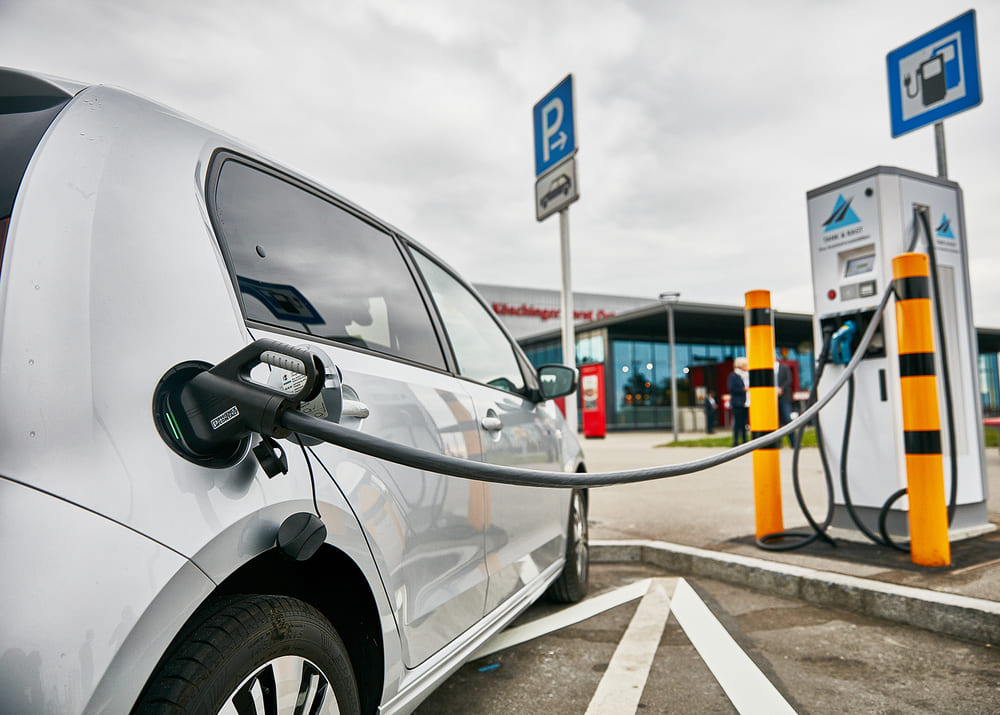

Як зазначив заступник Голови правління Укргазбанку Денис Чернишов, фінансування проєктів, пов’язаних з ефективним використанням енергоресурсів та зменшення негативного впливу на довкілля були і залишаються одними серед пріоритетних напрямків роботи банку. «Цей проєкт є вкрай важливим, як з точки зору розвитку інфраструктури електричного транспорту, так і у контексті забезпечення паливної безпеки держави за рахунок впровадження інноваційних технологій та мінімізації шкоди навколишньому середовищу. Ми впроваджуємо дійсно масштабний проєкт, в якому вбачаємо одну з перших ластівок на шляху інноваційної трансформації транспортної інфраструктури України до Європейських екологічних стандартів. Особливо враховуючи, що атомна енергія – це низьковуглецеве джерело енергії, що відіграє важливу роль у запобіганні викидам CO2», - наголосив Д. Чернишов. Третья часть статьи
